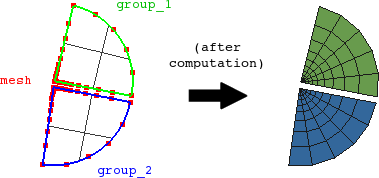

cfdmsh 4.0 documentation
cfdmsh 4.0 documentation cfdmsh 4.0 documentation


Creates quadrangle submeshes on tri-edge face groups (that can be create using the GetTriEdgeFaces function) and add base vertexes when possible.
The function can detect a base vertex for a given tri-edge face only if two of its edges are straight and one is bended. The base vertex is then the one linking both straight edges.
def MakeTriEdgeFaceSubmeshes( groups_and_mesh = None ):

| Name | Description | Type | GUI selection [?] | Selection by name [?] | Recursive [?] | Default value |
|---|---|---|---|---|---|---|
| groups_and_mesh | The input tri-edge face groups and the mesh in which to create sub-meshes. | List of Groups of 1 Face + 1 Mesh |
yes | yes | - | [None] |
| dim Value [?] | single Value [?] | Type | Number | Name |
|---|---|---|---|---|
| - | - | - | - | - |
from cfdmsh import * # To adapt to the cfdmsh installation method
vertex1 = geompy.MakeVertex(0, 75, 0)
vertex2 = geompy.MakeVertex(0, 10, 0)
vertex3 = geompy.MakeVertex(0, -10, 0)
vertex4 = geompy.MakeVertex(0, -75, 0)
wire = geompy.MakePolyline([vertex1, vertex2, vertex3, vertex4])
face = geompy.MakeFaceHW(100, 100, 1)
shell = CloseViscousLayer(wire, dim = 2, add = False)
AddToStudy(shell, "shell")
tri_edge_faces = GetTriEdgeFaces(shell)
mesh = smesh.Mesh(shell)
algo = mesh.Quadrangle()
algo = mesh.Segment()
hypo = algo.LocalLength(16)
MakeTriEdgeFaceSubmeshes(tri_edge_faces + [mesh])
mesh.Compute()
-
cfdmsh 4.0 documentation
tougeron-cfd.com © 2016